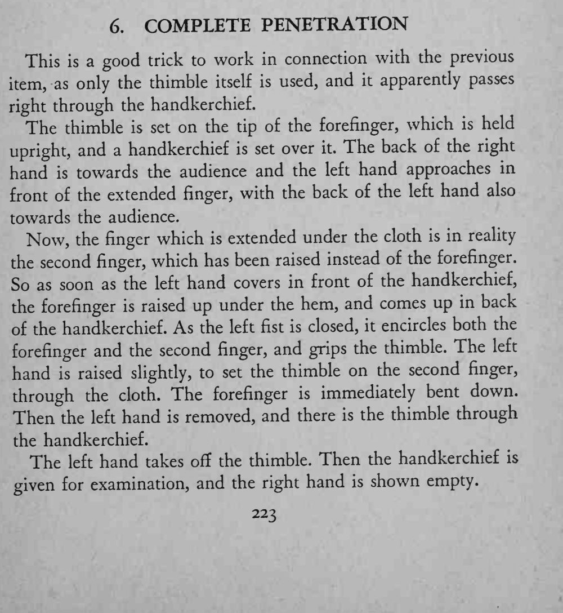

拇指套套在竖起的食指上，手帕蒙住之后，另一只手从前方一按，拇指套竟穿过手帕露在布外。
换指和移拇指套要同时完成，左拳盖住的瞬间别让布起皱穿帮。

This is a good trick to work in connection with the previous item, as only the thimble itself is used, and it apparently passes right through the handkerchief. The thimble is set on the tip of the forefinger, which is held upright, and a handkerchief is set over it. The back of the right hand towards the audience and the left hand approaches in front of the extended finger, with the back of the left hand also towards the audience. Now, the finger which is extended under the cloth is in reality the second finger, which has been raised instead of the forefinger. So as soon as the left hand covers in front of the handkerchief, the forefinger is raised up under the hem, and comes up in back of the handkerchief. As the left fist is closed, it encircles both the forefinger and the second finger, and grips the thimble. The left hand is raised slightly, to set the thimble on the second finger, through the cloth. The forefinger is immediately bent down. Then the left hand is removed, and there is the thimble through the handkerchief. The left hand takes oft the thimble. Then the handkerchief is given for examination, and the right hand is shown empty.